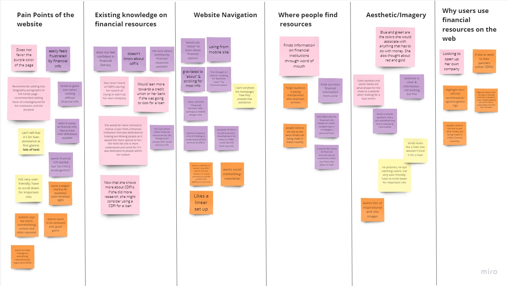

Research
We interviewed 4 users, one being the Business Development Specialist of ATNI-EDC. Our interviews lasted no more the 15 minutes and consisted of 10-15 questions. Below are the thoughts and answers that our group had gathered based on the interviews.

We gathered up the information that we have acquired and and grouped them into topics that were similar with each other.
After our interviews and analyzing our users’ answers, the group constructed a User Persona who we believed would be a good representative of our users.